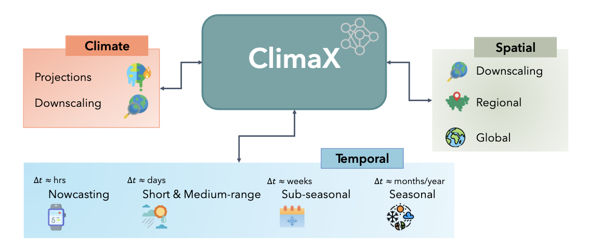
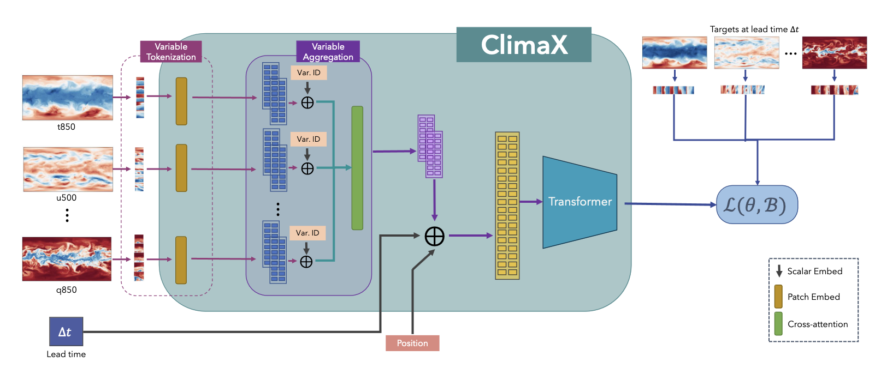
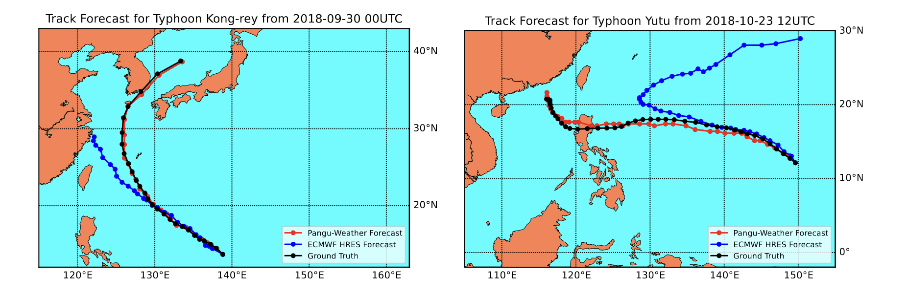
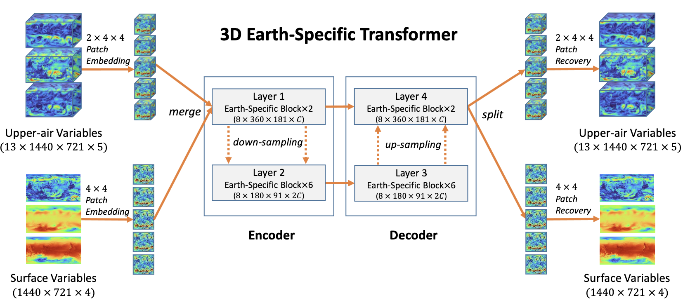
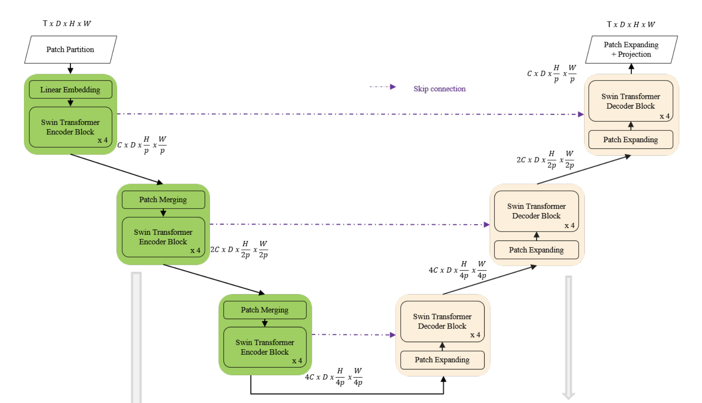

Introduction
Resources
TODOs
- Paper: The rise of data driven weather forecasts
- Look at foundation models scaling laws
- Is it possible to finetune for prediction of unseen variables?
- Look into surrogate models, which can be intergrated into larger projects together
- Project: AI CCA cloud classification atlas
- Look into Temporal GNNs
- Look into GNNs for climate
- Look at Neural GCM @ google
- Look at Neural General Circulation Models
- Look at Liquid neural networks
- Look at Recurrent Fast Weight Programmers
Notes on Talks
A Data-Oriented Perspective
These are Data-Driven approaches
Here are the major climate-centered datasets used in the field:
| Dataset | Size | Where? |
|---|---|---|
| MACCA | 60 TB | Nasa |
| CMIP6 | 25 TB | |
| Earth System Configuration Grid | 25 TB | ORNL |
| ERA5 | 1.5 PB | ECMWF |
| ARM | 50 TB | ORNL |
Information as value chain: how information is created, stored, and used in a particular context.
- How can we do this?
- How are agencies taken from agencies and used in the field?
- Is data free of errors?
- Without any bias?
- Is the data reliable?
Model Summary
Here are some of the state-of-the-art models in the field and their performance:
| Model | Precision | Forecast time |
|---|---|---|
| PanguWeather | < 50 m | 7 days |
| GraphWeather | < 50 m | 7 days |
| GraphCast | < 60 m | 8 days |
| ClimaX | < 100 m | 7 days |
Other approaches:
- Swin-SpatioTemporal Transformer: currently evaluated for NASA project Higher complexity, better for small scale
- Spherical Fourier Neural Transformer: to avoid noise and blurring problem Due to spherical projection of grid, problem is accentuated at the poles. This model is able to avoid this problem, using this operator for sphere geometry.
- GraphCast is better at small resolution and at different scales. Also better at compressing information.
- IFS uses global 9 km resolution data. On long term forecasts, it is better than ML models. However with higher resolution data (25km data), ML models are better.
- Ensamble Forecasts: run several simulation from same initial conditions, and average the results. This is a common technique in NWP. Same approach can be used for ML models.
AI 4 Good
Second Climate Forecast Revolution
As the first one revolved around Numerical Weather prediction forecasts (solving physics equations to predict weather eg. IFS).
Weatherbench 1
First attempt at a ML data oriented approach to weather forecasting. First winter of AI for climate, as not enough data was available. Data-based approaches were not precise enough to reach NWP levels of accuracy.
Weatherbench 2
- Data: in Zarr format + IFS baselines
- Evaluation Code: usind datacloud or other remote computing services (colab, aws, etc)
- Evaluation platform: interactive graphs, for user visualization
Are AI models just blurring?
How do we understand this factor? First we can check if the model is able to predict extremes (or is just averaging the data).
Blurring exists, but is limited to small scales and does not influence the prediction of extremes. Many ML models have been used for Hurrican Season prediction. Graphcast is better than NWP.
Tropical Cyclones
Quick Notes
Structure: cyclones develop in the presence of these conditions:
- warm water of tropical oceans (>26.5C) → collects energy through convection (?)
- unstable atmosphere, cooling fast enough to cause thunderstorms
- moist middle atmosphere (humidity)
- low vertical wind shears, and little change in wind direction with change in height
Tropical Cyclone Genesis potential index (GPI) → accurate, but only at low resolutions
Often these are good for spatial correlation but bad for temporal one (difficulty in predicting inter-annual events) Solution is to use evolutionary algorithms to obtain Pareto Front of possible solutions (all possible optimal trade-offs between spatial and temporal optimality) → all solutions still have non acceptable temporal resolution.
Tropical storms are very rare, lots of samples where the event returns negative, only a small portion positive.
Physics
A tropical cyclone is a storm system that rotates rapidly, featuring a low-pressure center, intense winds, and an organized series of thunderstorms that cause intense rain and sudden gusts. The term tropical refers to the geographical origin of these systems, which form almost exclusively over tropical seas, while cyclone refers to their winds moving in a circle, around a central eye, with surface winds blowing counterclockwise in the Northern Hemisphere and clockwise in the Southern one. These cyclones have a diameter most often found between 100 and 2,000 km. The powerful swirling winds of a tropical cyclone, as the ones shown in Figure 2.3, arise due to the Earth’s rotation imparting angular momentum as air moves towards the axis of rotation. These storms are generally most severe when over or near water and quickly lose intensity when moving over land. Damage can result from strong winds, rain, high waves, and storm surges, all of which are phenomena of rising water caused by high-speed winds pushing water towards the coast.
These tropical storms are low-pressure regions in the troposphere. The pressure is the lowest near the surface, while at the center of these storms sea level pressures are among the lowest ever observed. These systems are called ”warm core” because the environment near their center is warmer than the ambient temperature at all heights. At the periphery of the storm, the air may be nearly calm; however, because of the Earth’s rotation, the air possesses non-zero absolute angular momentum. As the air flows radially inwards, it starts rotating cyclonically so as to conserve angular momentum effectively. At a certain distance from the centre of the storm, air starts moving upwards towards the top of the troposphere. The air, once lifted, moves away from the storm’s centre and forms a layer of high clouds called ”cirrus clouds”. These processes ultimately create a wind field that is almost symmetrical around the storm’s centre. Wind speeds are low at the centre, increase moving outwards towards the radius of maximum winds and then decay more gradually with radius.
Foundation Models
GNNs
ViTs
General Circulation Models
Introduction
General Circulation Models (GCMs) are a class of models which use a combination of numerical solvers and tuned representations for small scale processes.
Neural GCM
Neural GCM is a GCM which uses a neural network to represent the small scale processes. It is competitive with ML models on 10 days forecasts, and competitive with IFS on 15 days forecasts.
Uses a fully differentiable hybrid GCM of the atmosphere, with a model split into two main subcomponents:
- A Differentiable Dynamical Core (DDC) which solves the equations of motion (dynamic equations);
- A Learned Physics module, which learns to parametrize a set of physical processes (physics equations) with a neural network.
End-to-end training of GCMs
Uses extended backpropagation between the DDC and the Learned Physics module.
Three loss functions:
- MSE for accuracy: Takes into account the layer lead time over the forecast horizon. Double penalty problem: wrong features at long lead times are penalized more than wrong features at short lead times.
- Squared Loss: Encourages spectrum to match the data.
- MSE for bias: Batch average mean amplitude of the bias.
Trained on three days rollout data. Remained stable for year-long simulations.
Stochastic GCM
Introduces randomness to be able to produce ensambles of forecasts.
Loss is CRPS (Continuous Ranked Probability Score) = Mean absolute error + Variance in ensamble spread
Liquid Neural Networks
Introduction
In classical statistics there is an optimal amount of paramterers for a model, after which performance decreases. This problem is known as overparametrization and is also present in neural networks. The recent developments in transformers and vision transformers have shown that overparametrization can be beneficial for performance.
Benefits include new emergent behaviours, more general learning and better generalization and robustness. This is at the cost of increased computational complexity and memory requirements, as well as lower accuracy on minority samples.
Brain inspired, building blocks are neurons and equations from neuron to neuron.
Characteristics
Liquid neural networks stay adaptable even after training. Good for going out of distribution, so for real world applications (drone navigation, self driving cars).
Neural dynamics are continuous processes, so they can be described by differential equations.
Synaptic release is more than just a scalar, and adds non-linearity to the system.
Liquid State Machines
Continuous time/depth neural networks (CTRNNs) are a type of recurrent neural network (RNN) where the nodes (neurons) are described by differential equations.
\( \frac{dx(t)}{dx} = f_{n,k,l}(x(t), I(t), \theta) \)
Where f is the neural network, x is the state of the neuron, I is the input and \(\theta\) are the parameters of the network.
The state of the network is the state of all the neurons in the network.
There is no computation for each time step, the network is updated arbitrairly, unlike RNNs.
\( \frac{dx(t)}{dx} = -\frac{x(t)}{\tau} + f_{n,k,l}(x(t), I(t), \theta) \)
Implementation
Numerical ODE solver
The backward pass can either be done with the adjoint sensitivity method (loss + neural ODE solver + adjoint state) or with the backpropagation through time method (classic). The latter method is considered better as it is not a black box.
Liquid Time-Constant Networks
Leaky integrator neural model
\( \frac{dx(t)}{dt} = -\frac{x(t)}{\tau} + f_{n,k,l}(x(t), I(t), \theta) \)
Uses conductance-based synapses, which are more biologically plausible than the classic synapses.
\( S(t) = f_{n,k,l}(x(t), I(t), \theta)(A - x(t)) \)
\( \frac{dx(t)}{dt} = - [\frac{1}{\tau} + f_{n,k,l}(x(t), I(t), \theta)]x(t) + f_{n,k,l}(x(t), I(t), \theta)A \)
The first term is time-dependent, while the second term the input representation at the current time step.
Activations are changed to differential equations, interactions are given by non-linearity (ex. neural nets).
The network might associate the dynamics of the task with its own behaviour (ex. steering left/right implies camera movement).
Expressivity
Using the trajectory length method it is possible to measure the expressivity of a network. The method consists in projecting the latent space of the network onto a lower dimensional space and measuring the length of the trajectory in the lower dimensional space (ex. 2D).
These networks tend to have a higher expressivity than RNNs, but are bad with long term dependencies.
Differential equations can form causal structures, which is good.
Some limitations include:
- the complexity of this network is tied to the ODE solver, which use fixed steps. Some solutions include Hypersolvers, closed form solutions and sparse flows.
- Vanishing gradients and exploding gradients are still a problem. A possible solution is to use a mixed memory wrapper.
Linear Transformers
Linear Transformers as FWP
Papers
ClimaX
ClimaX is a foundation model designed to be pre-trained on heterogeneous data sources and then fine-tuned to solve various downstream weather and climate problems.

The set of climate and weather variables is extremely broad, and predictions may be required for regional or even spatially incomplete data, even at different resolutions. Current CNN-based architectures are not applicable in these scenarios, as they require the input to be perfectly gridded, contain a fixed set of variables, and have a fixed spatial resolution. resolution. Transformer-based architectures, on the other hand, offer much greater flexibility by treating the image-like data as a set of tokens. As a consequence, the backbone architecture chosen is a Vision Transformer to provide greater flexibility.

Two significant changes to this model were implemented. The first change involved variable tokenization, which includes separating each variable into its own channel and tokenizing the input into a sequence of patches. The second change was variable aggregation, introduced to speed up computation by reducing the dimensionality of the input data and to aid in distinguishing between different variables, thereby enhancing attention-based training. After combining variables, the vision transformer block can produce output tokens that are then processed through a linear prediction head to recreate the original image. During the pre-training phase, a latitude-weighted reconstruction error is used to keep into account the location of the current patch. For fine-tuning, the ClimaX modules can be frozen, allowing for training only on the intended part of the architecture. In fact, often only the final prediction head and variable coding modules need retraining. This model has undergone testing for several downstream tasks, including global and regional forecasting and prediction for unseen climate tasks.
PanguWeather
Pangu Weather is a transformer architecture trained on three dimensional weather variables, as opposed to Climax, where all data was two dimensional. The lead time is also handled differently, with the model being trained to predict the weather at a certain time in the future, as opposed to the approach taken in the ClimaX work, where the lead time is passed as a parameter during the training phase.

The former approach is more similar to the one used in this project, where the simplicity of the dataset allows for a more straightforward implementation of the lead time, sacrificing some flexibility in the process. Finally, the Pangu weather model features some advanced techniques which separate it from all other competitors, namely the use of two different resolutions for the encoding of each variable, allowing the model to capture both large scale and small scale features, and use the attention mechanism to focus on different parts of the input data at the same time.

To achieve these two resolution, an encoder-decoder approach is used, where the encoder is tasked with the downscaling of input variables, and the decoder is tasked with the upscaling of the output. All transformer blocks are then applied to the output of the encoder, taking as input both the low and high resolution information.
FuXi
FiXi is an auto-regressive model for weather forecasting. The model is based on the U-transformer architecture, and is able to recurrently produce a prediction for the next timestep, given the previous predictions.

To generate a 15 days forecast, it is estimated it takes the model around 60 iterations, with a lead time of 6 hours. The loss utilized is multi-step, meaning it takes into account several timesteps at once, minimizing the error for each of them. This is in contrast with the approach taken in this project, where the loss is computed for each timestep individually. The U-transformer takes as input around 70 variables, for the current timestep, as well as the the preceding frame. All the variables used for this model are however restricted to two dimensions, ignoring any height layer. This architecture is a variation of the vanilla transformer model, and as opposed to the latter, before passing the encoded information to the self attention blocks, it downscales partially the input.
GraphCast
Graphcast is a graph neural network architecture with an encoder-decoder configuration. The graph neural network is used to encode unstructured input data into a graph representation. As opposed to, for instance, convolutional layers where neighbouring information is encoded in a structured grid, graph layers use message passing between nodes to capture the relationships between different parts of the input data. This allows for the encoding of different kind of information, not necessarily restricted to a grid configuration.

One important hyperparamter to be set in this kind of architectures is the number of hops the messages containing neighbouring information are allowed to travel. This is crucial for the model to learn from the correct amount of knowledge, and allows for reducing the computational complexity of the model, as the number of hops is directly related to the time required for the model to train.

FourcastNet
FourcastNet is an architecture based on the Adaptive Fourier Neural Op- erator, which is a neural network model designed for high-resolution inputs, fused with a vision transformer backbone. The Fourier Neural Operator is a neural network architecture that uses a Fourier basis to represent the input data, allowing for the efficient computation of convolutions in the Fourier domain.

The use of this module allows to have a very small footprint in GPU memory, which is crucial for the training of large models. For instance, the base model used is around 10Gb in size, while analogue models with similar number of parameters have a size of around eight times as large.
Spatio-Temporal Swin-Transformer
Input to the model is 4D with the addition of the temporal dimension.
The input video is defined to be of size T×H×W×3, tokenization is 2x4x4x3: In Video Swin Transformer, we treat each 3D patch of size 2×4×4×3 as a token, while the channel size is not patchified.

Spatial downsampling is applied to reduce the embedding space. We used a fully connected layer to scale up the dimension of the incoming data.
The proposed network is tested on the Weather4Cast2021 weather forecasting challenge data, which requires the prediction of 8 hours ahead future frames (4 per hour) from an hour weather product sequence.
This paper used 3D patch embedding, 3D shifted window multi-head self attention as well as patch merging. This paper has 2d variables as channel dimension is not patchified. In my case we'll need to create 4D patch embedding as also height layer has to be partitioned.
ACE: A fast, skillful learned global atmospheric model for climate prediction
Closed-form continuous-time neural networks
MetNet
Recurrent Fast Weight Programmers
Development
Parallelization
Techniques for pytorch
- DDP: the model is copied on all processes, the dataset is split on all the workers and each model is fed a different batch gradient communication is used to keep the models in sync (also overlap of gradient computation)
- RPC: used if training paradigm can’t fit using DDP
- Collective Comms: foundation for RPC and DDP, low level APIs
Paradigms
- Model Parallelism: each worker focuses on a portion of the model, best for large models.
- Data Parallelism: split train set on each worker, shared weights (DDP)
- Parameter server architecture: central node with parameters, workers update the weights by computing the gradient
- All-Reduce Comms: several workers compute private gradient, then combine with all-reduce operation to share global gradient.
- Gradient accumulation: compute gradient on several minibatches, used if comms overhead is high.
Distributed deep learning
Distributed training is the process of subdividing the training workload of, for example, a large neural network across multiple processors. These processors are often referred to as workers, and they are tasked to compute in parallel to speed up the training process. There are two approaches to parallelism: data and model. In data parallelism, the full training set is divided between all the workers, where a copy of the model is also kept. Training is done either synchronously, where all the workers wait for each other, synchronize the gradients, and only then perform the backward step; or asynchronously, where a selected worker is tasked with keeping an updated version of the weights, and all the others can read and write from this worker, often called a ”parameter server”. Using the latter procedure means that all resources are used at the same time, without any delay. However, it also means that only one worker at a time is training with the latest version of the weights. In large clusters the centralized nature of this approach can also create bottlenecks. Model parallelism, on the other hand, divides the model either horizontally, i.e. node-wise, or vertically, i.e. layer-wise, between several workers who are allowed to run at the same time. This approach also reduces the footprint of the model in each worker, making it lighter on the GPU’s memory.
DDP
Distributed Data Parallel is a method of data parallelism that enables a program to operate on numerous machines simultaneously. Applications utilizing DDP generate numerous processes and initialize one DDP instance for each process.
FSDP
In some cases, it may not be possible to create a duplicate of the model for every process. In these instances, Fully Sharded Data Parallel may be utilized, where the optimiser states, gradients, and parameters of the model are subdivided across all DDP ranks. In this case, the neural network is divided into smaller sub-models, each of which represents a portion of the parameters of the overall model. This approach allows different parts of the model to be processed simultaneously by different processing units, and can be used in conjunction with a data-parallel approach that splits the training set to achieve even faster processing times. This results in a program that has less impact on GPU memory, thus reducing execution times.
DeepSpeed
DeepSpeed is a deep learning optimisation suite that enables efficient scalability and faster execution times for both training and inference of large machine learning models. It was developed by Microsoft and claims to offer a 15x speedup over other state-of-the-art parallelization techniques. It provides memory efficient data parallelism and enables training without model parallelism through a novel solution called Zero Redundancy Optimizer. Unlike basic data parallelism, where memory states are replicated across data-parallel processes, ZeRO partitions model states and gradients to save significant memory. Several other memory optimisation techniques are also used, such as Constant Buffer Optimisation, which combines all communication-based operations into a single operand, and Contiguous Memory Optimisation, which reduces fragmentation during training.
Comparing State-of-the-Art Models
Challenges and Opportunities
Difficulties
- Post-processing of data
- Costs for specific scenarios and analysis (ex. outliers in rare events)
- Under-utilization of existing data since it is expensive to process
- Data quality and quantity
Opportunities
- Multimodal models: radar, satellite, numerical weather prediction, etc.
- Interpretable models / explainable AI / causal AI
- Generizable models
- can the model predict out of scope?
- can the model avoid bias and flaws in the training data?
- Continuous learning: can the model learn from new data?
- On-device adaptation: customize a model based on local data (ex. adjust to local climate)
- Federated Learning: each company trains their own model, but they can share their models to improve the overall model. Global model learns from updates from local models.
Foundation Model for Climate Improvements
Incremental Probability in Cyclone Prediction
One possible improvement to the presented work arises from the fact that the dataset currently illustrates the likelihood of a cyclone being present in a patch with a simple Gaussian distribution. Nonetheless, as the weather variables increasingly make it more plausible, the probability of a cyclone should raise over time. It may be possible to encode this behaviour by manipulating the standard deviation parameter of the Gaussian, resulting in the probability area progressively expanding over time. This would require determining when a patch is displaying indications of forming a tropical cyclone and identifying the exact central position in the patch.
Parameter oriented training
One of the main differences between the current implementation of the model and the one presented in the ClimaX paper, is the fact that the latter is trained to predict the input variables shifted by a certain amount of lead time, and the training is repeated for several lead times. This allows the architecture to learn the correct behaviour of each variable over time, and enhances its flexibility by allowing at inference time to take a lead time parameter, and output the correct prediction. This approach has been referenced to as ”parameter oriented training”, and by its very flexible nature allows for a more general purpose model, which can be used for several different tasks.
Global forecasting system
In a similar way to ClimaX’s approach, it may be feasible to merge the image patches and generate a worldwide weather forecast. This would not necessitate any modifications to the current model since the global image normalization is already executed. Additionally, the dataset can be adjusted to share an N-pixel border with adjoining patches and prevent loss of nearby data. This modification addresses weather variable forecasting and has no impact on this project’s fine- tuning section. Predicting global cyclones may not be necessary since the regions where they most often form are widely recognized, and a regional forecasting approach would be enough.
Time-Series Transformers
Among several advantages of the transformer architecture, the ability to capture long-range depen- dencies and interactions is particularly central to time series modeling. A possible improvement to the current work could revolve around increasing the dimensionality of the input data by adding a temporal dimension, and using this information to better predict the future weather. This would imply passing a sequence of time snapshots to the model, and the tensor’s dimensions would become <B, T, V, H, Lat, Lon>, where T is the number of time snapshots.
As for the modifications necessary to the current architecture, the positional encoding of the transformer has to be changed, to allow for the correct encoding of the temporal dimension. What has been done in similar works, is allow for the embedding to be learned from time series data, and not be fixed as in the current work. A similar approach is to use the timestamp information to influence the training of these embedding layers, and allow for a more accurate representation of the data.
Ensemble of models
Connection to the Intertwin project
One possible mean of unifying the two works could revolve around the use of graph neural network architectures, and integrating these mostly novel approaches into large foundation models. While Fronza’s work revolved around graph neural networks, there exist in the literature examples of applications of these kind of models to global weather forecasting, which is an essential requirement for developing a foundation model based on GNNs. These techniques have already been tested in the literature, where Graph Transformers are used to generate text, processing both the data with the classical approach, but also building a knowledge graph of the sentence, enhancing the understanding of the context. This approach could be used to build a foundation model which is able to understand the context of the input data, and use this knowledge to improve the prediction ability of the model. In this case, the context could be the current regional weather, and the model could use this information to better predict the future weather